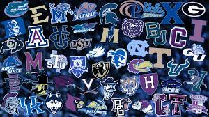

In just the past year, many schools have begun putting mechanisms in place to attempt to lure in athletes with promises of lucrative NIL contracts. This creates a new system with potentially both positive and concerning consequences that must be analyzed. While coaches cannot directly organize NIL deals for student athletes, coaches can promise recruits the ability for them to make such deals “on their own” at their respective schools. the prospect of NIL deals heavily favors large schools with connections, vast alumni booster communities, and television contracts. For instance, before even playing a snap for the University of Alabama, head coach Nick Saban announced that incoming quarterback Bryce Young had NIL contract offers approaching “ungodly numbers” for upwards of $1 million as a result of the amount of press coverage that the university's football team, and therefore their quarterback, receive over the course of a season. As NIL is relatively new, there exist inconsistencies in individual state laws that benefit student athletes in certain states over others. New Mexico has been ranked as the state with the most friendly NIL laws, while Mississippi has been ranked as having the most restrictive rules for athletes.ust as schools compete in an arms race of sorts to build the best facilities to try and attract recruits, they will now do so in attempting to attract athletes on the prospect of NIL deals. Multiple schools have already been seen to create sham organizations funded by booster donations to pay athletes. For instance, alumni boosters at the University of Texas at Austin have created an organization known as “The Pancake Factory”. This organization raises money from alumni who want to support the school's football program, and has vowed to pay every offensive lineman at the school $50,000 per year in NIL benefits. Players like Reggie Bush or Johnny Manziel were punished if they tried to do any of this
